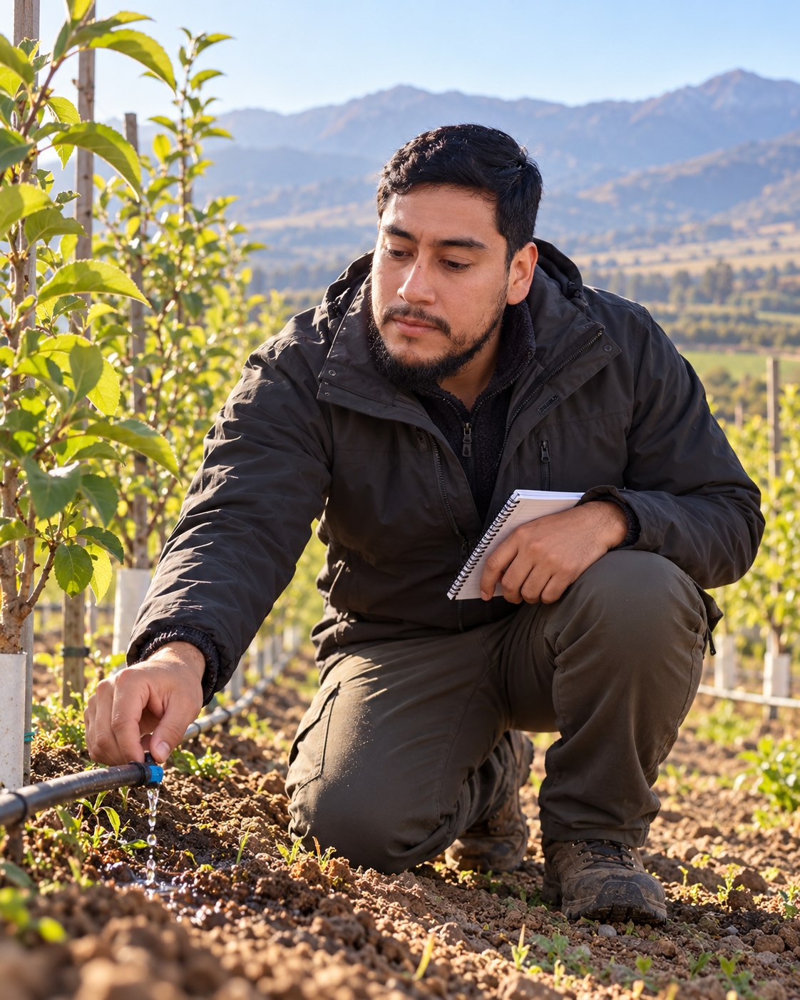
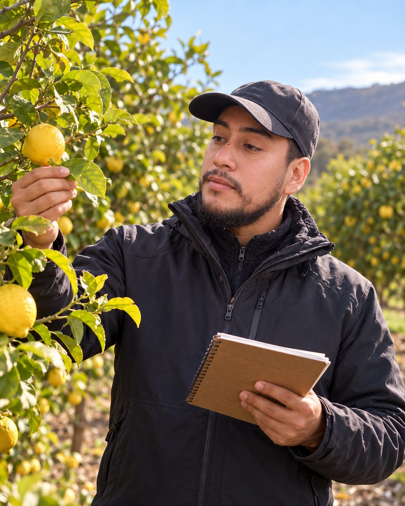
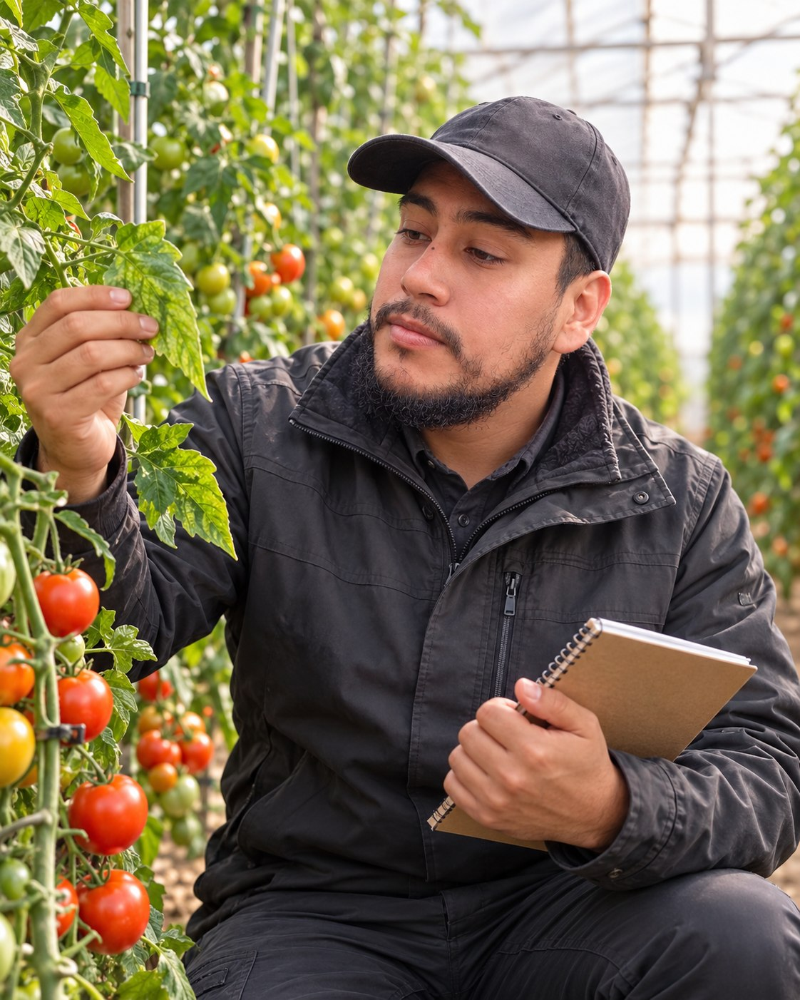

Distribución y uso del aguaRiego
Revisión de antecedentes y del sistema para identificar qué evaluar y planificar mejoras en el uso del agua.
Riego por goteo · MicroaspersiónConsultar por riegoRevisa tus dudas de riego, fertilización o manejo con José Ignacio Farías, ingeniero agrícola. Consulta a distancia o solicita una visita a terreno.
Visitas en la Región de Valparaíso · Asesoría a distancia

Revisamos el cultivo, el suelo y los antecedentes de manejo para definir los próximos pasos según tu situación.

Distribución y uso del aguaRevisión de antecedentes y del sistema para identificar qué evaluar y planificar mejoras en el uso del agua.
Riego por goteo · MicroaspersiónConsultar por riego Análisis y fertilización
Análisis y fertilizaciónInterpretación de análisis de suelo y foliares para orientar la nutrición y definir qué información falta antes de fertilizar.
Suelo · Nutrición vegetal · FertilizaciónConsultar por suelo y nutrición
Estado y seguimientoEvaluación de frutales y hortalizas para revisar su estado, los manejos realizados y las alternativas de seguimiento.
Frutales · Hortalizas · ViñedosConsultar por mi cultivoImágenes ilustrativas generadas con IA.
¿Buscas planificación productiva, agricultura de precisión o apoyo con registros y certificaciones? Cuéntanos tu proyecto.
Consulta las tarifas para pequeños agricultores de hasta 5 ha y solicita una cotización para videollamadas o cálculos.
$24.990 CLP
Precio regular $49.980 CLP
Para pequeños productores con una superficie productiva total de hasta 5 hectáreas.
Revisamos tu consulta sobre riego, suelo, nutrición o manejo y definimos el siguiente paso.
Solicitar asesoría inicialDesde $29.990 CLP
Evaluación del cultivo en tu predio. Indica tu comuna y superficie para confirmar cobertura, traslado y precio total. Para predios de mayor superficie, solicita una cotización.
Cotizar visita a terrenoValor a cotizar
Conversamos a distancia sobre el problema del cultivo y revisamos los antecedentes que tengas disponibles.
Consultar por videollamadaValor a cotizar
Estimación de cantidades de fertilizante según cultivo, superficie y antecedentes disponibles. Si tienes análisis de suelo, foliares o de agua, indícalo al consultar.
Cotizar cálculo de fertilizaciónValor a cotizar
Estimación del volumen de agua y del tiempo de riego según el cultivo y el sistema. Indica la superficie, el tipo de riego y el caudal, si lo conoces.
Cotizar cálculo de riegoEl precio final de la visita se confirma por WhatsApp según la comuna, el traslado y el alcance. Solicita el valor total y los entregables antes de contratar.
Para revisión de análisis, acompañamiento de temporada u otro servicio, solicita una cotización.
Elige la modalidad que se acerca a tu necesidad. Antes de contratar, la propuesta detallará trabajo, entregables, duración y valor para tu predio.
Para observar el cultivo, revisar su manejo y evaluar una necesidad concreta en el predio.
Para comprender resultados de suelo, agua o análisis foliar y relacionarlos con tu cultivo.
Para dar continuidad a las decisiones y revisar la evolución del cultivo durante la temporada.
Tu cotización debe indicar: objetivo, duración de la visita o revisión, entregable y formato, plazo de entrega, seguimiento, valor total y vigencia. Traslados, muestreos y análisis de laboratorio se detallan por separado cuando correspondan. Solicita estos antecedentes antes de contratar.
Indica cultivo, comuna y problema u objetivo. Si tienes fotografías o análisis, puedes compartirlos por WhatsApp.
Revisamos los antecedentes iniciales y evaluamos si corresponde una visita, asesoría remota u otra información.
Coordinamos alcance, valor y disponibilidad antes de comenzar. El trabajo se adapta a las necesidades del predio.
En AgroIntegra acompañamos a productores de la Región de Valparaíso en riego, nutrición, suelos y manejo de cultivos. Combinamos antecedentes del predio, observación en terreno y comunicación directa.
Conoce más de AgroIntegra@agrointegra.consultores
Ingeniero agrícola
“Llevamos tres temporadas trabajando con AgroIntegra y los resultados han sido notables. El rendimiento de nuestro nogal aumentó un 35% gracias al plan de fertilización y el riego tecnificado que instalaron.”
“José Ignacio y su equipo son de esos profesionales que realmente se involucran con tu proyecto. El análisis de suelos cambió completamente nuestra forma de manejar el huerto de paltos. Excelente inversión.”
“Redujimos el consumo de agua en un 40% con el sistema de riego diseñado por AgroIntegra, sin perder calidad en la fruta. En plena escasez hídrica, eso es invaluable para seguir produciendo.”
Testimonios de experiencias individuales; no constituyen una promesa de resultados. Consulta los antecedentes y el alcance de cada experiencia al conversar con José Ignacio. Las condiciones de suelo, clima y manejo influyen en cada resultado.
Con tu cultivo, comuna y motivo podemos iniciar una conversación más útil y evaluar el siguiente paso.
La asesoría inicial cuesta $24.990 CLP con el descuento para pequeños productores de hasta 5 ha. La visita a terreno para ese mismo grupo parte en $29.990 CLP. Consulta los servicios y tarifas. Para confirmar una cotización, indícanos cultivo, comuna, superficie y necesidad. El presupuesto especifica qué se revisa, duración, entregables, plazo, seguimiento y valor total. Confirma si incluye traslados, muestreo y laboratorio. Recibirás las condiciones antes de contratar.
Podemos revisar los antecedentes iniciales por WhatsApp y evaluar si es posible continuar de forma remota o si hace falta una visita en terreno.
Cultivo, comuna, superficie aproximada y lo que observas o buscas mejorar. Si los tienes, añade fotografías recientes y análisis de suelo o agua en WhatsApp.
Para otras regiones, consulta por asesoría remota o visitas programadas. La disponibilidad se acuerda según el proyecto y la ubicación.
Completa los campos obligatorios o abre WhatsApp sin completar el formulario.
Espacios de difusión para viveros, insumos, riego, maquinaria, formación y servicios agrícolas. Cuéntanos tu oferta y preparemos una propuesta de contenido.
Presenta tu producto con mención a tu cuenta y enlace hacia tu oferta.
Material de tu marca o diseño a cotizarExplica tu solución con texto, edición y una invitación a contactar a tu empresa.
Formato y producción definidos en la propuestaCombina contenidos para presentar tu marca durante varios días.
Solicita alcance e interacciones recientes antes de reservarEl presupuesto separa producción, difusión e inversión en anuncios cuando corresponda. Se acuerdan calendario, revisión y reporte. La difusión no garantiza ventas ni un número de visualizaciones.
Ejemplos visuales de riego, nutrición y manejo. Las siguientes imágenes son ilustraciones con IA, no registros de trabajos realizados.
Consulta disponibilidad para una visita en tu comuna. Para proyectos fuera de la región, evaluamos asesoría remota o visitas programadas.
Consultar cobertura en mi comuna